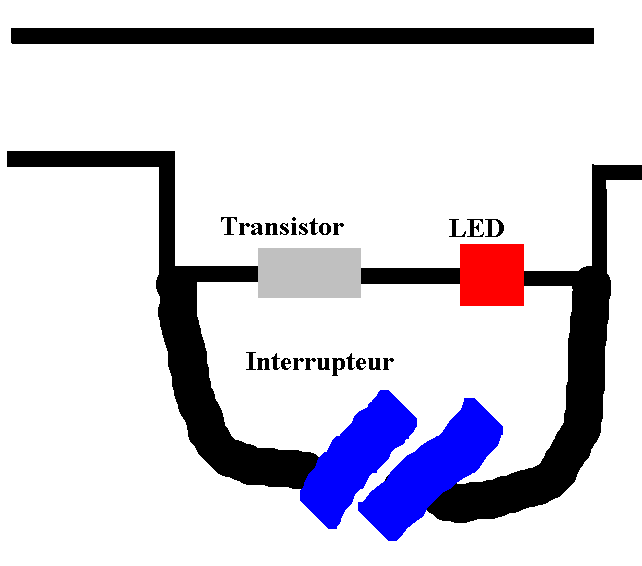

LA BLACK BOX
Par Skeud, pour Galaad
Savoir, c'est vivre.
Et maintenir dans l'ignorance, c'est
presque un homicide.
Kesske c'est
ke donc ça????
La black box est le moyen le plus simple et le moins cher de faire du phreaking. Celui qui
appelle ne paye rien!
Komment ke ça
marche???
C'est très simple. Lorsque le téléphone est décroché, il présente une impédance de 1000 Ohms.
Pour signaler la prise de ligne, cette impédance se transforme en une résistance de 700 Ohms.
C'est ce qui permet au standard de Farce Telecon de détécter la prise de ligne.
Le montage de la Black Box est des plus simples : il suffit de mettre une resistance de 2,2
KOhms, ce qui fait que lorsque vous décrochez le téléphone, il y a une impédence de 9,2 Ohms.
Assez pour prendre la ligne, et le centrale de FT ne remarque rien, il croit que le téléphone
sonne dans le vide.
Mais...... voilà, y'a un problème. Si ça dure trop longtemps. Vous avez surement remarqué que
l'on ne peut pas laisser sonner indéfiniment. Après une courte periode, ça racroche quand même.
Alors, pour cela, vous pouvez ajouter un petit interrupteur, ainsi vous appuiyez de temps en
temps. On peut rajouter aussi une led, mais c'est juste décoratif.

Un dessin bien degueulasse§§§§§